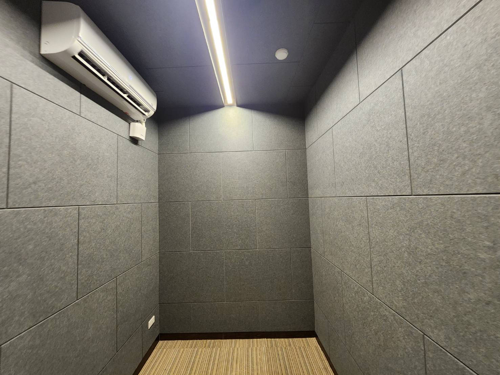
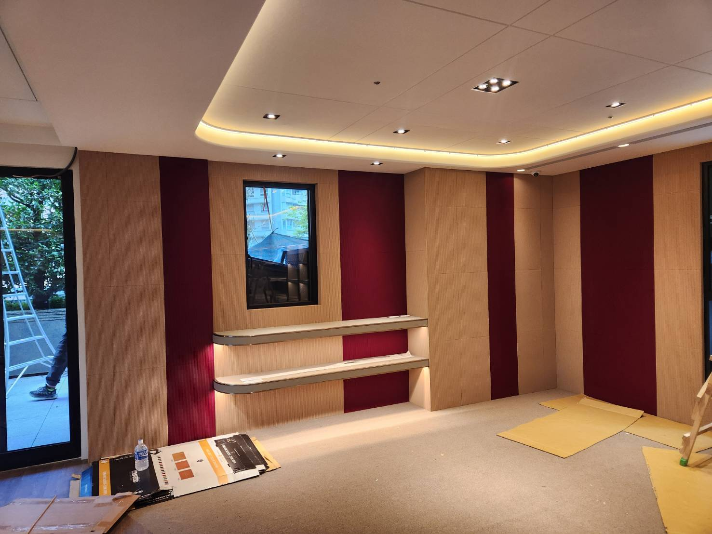
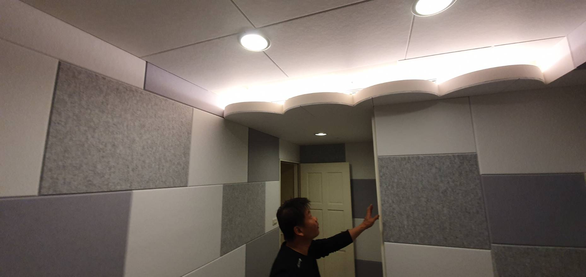
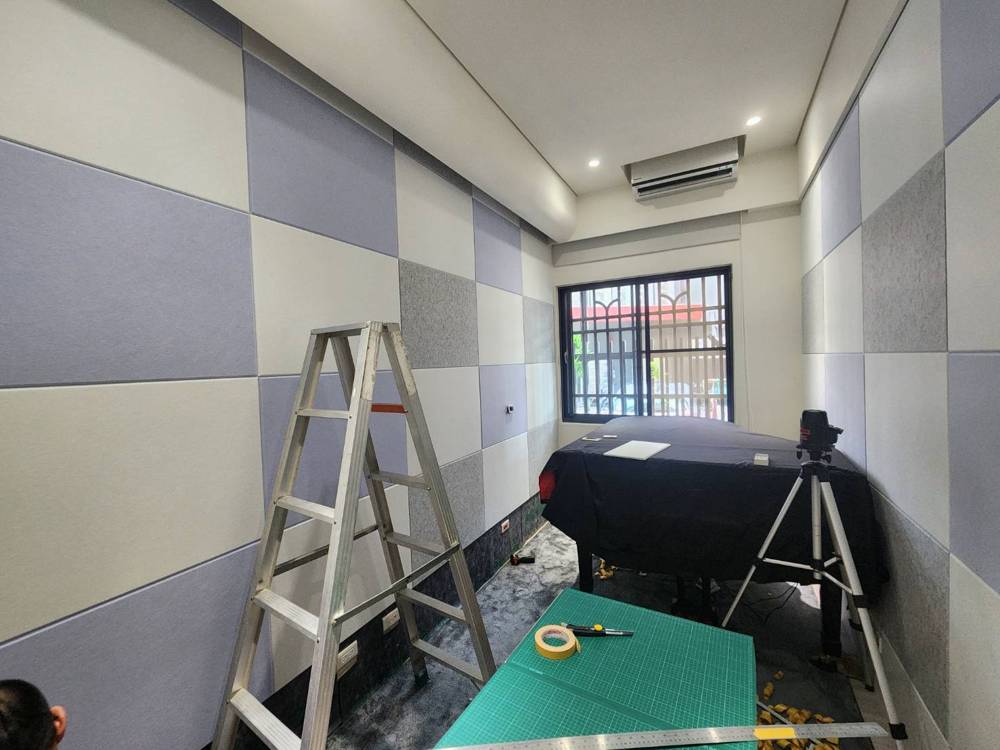

低頻傳遞
低頻波長長，容易穿透輕量結構，也更容易造成鄰房與樓下的嗡鳴感。
HOME THEATER ACOUSTICS
家庭劇院的重低音很容易穿牆、走樓板，也會沿著建築結構傳出去。只換一扇隔音門，常常不是完整答案。
REAL PROJECTS
視聽與音樂空間除了隔音，室內反射、混響與低頻也很重要。下面是實際聲學牆面與天花板工程案例。




WHOLE ROOM APPROACH
低頻波長長，容易穿透輕量結構，也更容易造成鄰房與樓下的嗡鳴感。
高要求空間需要考慮結構解耦，而不是只增加材料厚度。
門是重要弱點，但不能忽略其他面與結構繞射路徑。
上下樓層的低頻與振動，需要評估結構傳聲與固定方式。
隔音做完後，還要處理駐波、早期反射與混響，聲音才會真正好聽。
超低音、喇叭、投影設備或空調若直接耦合結構，也可能成為噪音來源。
FAQ
不一定。低頻可能從牆、樓板、天花板與結構繞過門，因此必須先找主要傳遞路徑。
不是。吸音板主要改善室內反射；阻止聲音傳出去需要另一套隔音與結構控制方法。
可以，但要把隔音和室內聲學分開設計，再整合成同一套系統。
CONTACT
先判斷，再決定真正需要做到哪一層。